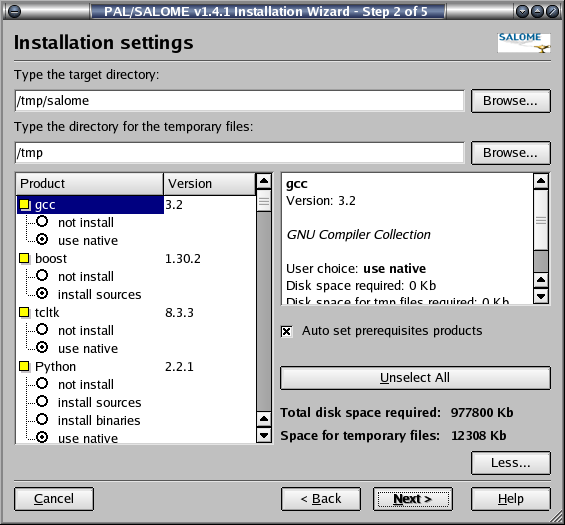
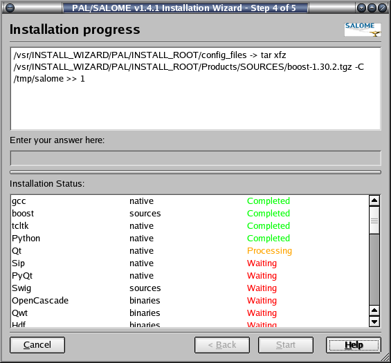

Please, take into account
that displayed amount of required disk space is approximate and may differ
when you install products on your hard drive.
Please, take into account
that displayed amount of required disk space is approximate and may differ
when you install products on your hard drive. You can run the Installation Wizard in two modes. It's root directory contains python script runInstall.py:
[ python ] runInstall [ -g | b ] [ -f <xml-file> ] [ -t <target-dir> ] [ -tmp <tmp-dir> ]
|
-g |
Runs the Installation Wizard in the GUI mode. In this case only <xml-file> key is taken into account. This option is used by default. |
|
-b |
Runs the Installation Wizard in the batch mode. |
|
-f <xml-file> |
The configuration file to be used by the Installation Wizard. If this parameter is missed then the script tries to define the Red Hat version and uses corresponding xml file. For example, for the Red Hat 8.0 config_RedHat8_0.xml file is supposed to be used by default. If the appropriate file is not found, config.xml is used by default. |
|
-t <target-dir> |
The target directory, SALOME products to be installed to. If used, overloads target directory, given in the configuration xml file. |
|
-tmp <tmp-dir> |
The directory, which is used to contain temporary files. If used, overloads temporary directory, given in the configuration xml file. |
|
-h |
Prints this help information. |
So, to run the Installation Wizard in the GUI mode, just type runInstall.
The installation procedure can support some different Linux platforms (currently it provides only configuration scripts for RedHat-8.0) and various number of products. The using of configuration xml files gives flexible way to modify the list of products to be installed by the Installation Wizard without changing program's source code. Just create your own configuration file and implement installation scripts for products you want to be provided by Wizard. See modifying XML configuration file and implementing installation scripts for the new products for more information.
The Installation Wizard was built with using of the Qt library. The program contains several pages. To navigate between pages use "Next" and "Back" buttons in the lower part of the wizard window. "Cancel" button closes dialog window and quits the installation procedure. To invoke this help information click "Help" button.
Skip the first "Introduction" page by pressing "Next" button.
In the second page you are proposed to enter the target directory where
all selected products will be installed to. You can also press "Browse..."
button and choose the folder for installation using standard Qt
browse directory dialog box.
If the directory you want to install products does not exist you will be
prompted to confirm directory creation. If you type wrong directory path,
or if you have no permission for the directory you use, the corresponding
message box will raise.
The Installation Wizard has two modes of the installation: basic and advanced. In the basic mode it is necessary just to enter target directory. If you want to use advanced mode, click "More..." button.
In the advanced mode you have the possibility to select products to
be installed (see Fig.1 ). Each product has
several options of installation: you have a possibility to use native
products, install already precompiled binaries, build product from the
sources or not installed at all. Possible options and default choice are
provided by the configuration file. You can mark the products, you want
to install, by clicking the corresponding radiobuttons in the list view
in the left part of the page. Note that some products can be installed
only together with other products (or these prerequisite products should
be already installed on your computer). The installation procedure has
a special feature to automatically mark these products in the list view.
For example, in order to install pyqt it's necessary to
have gcc, python, qt and sip
installed. Therefore all these products will be marked when you check
on pyqt. This feature can be switched off by clicking "Auto
set prerequisites products" checkbox.
Special button in the right part of the page - "Unselect All"
- allows to reset quickly all products to the "not install"
state.
If you want to use native Linux Red Hat 8.0 products (these are gcc, tcl,
Python, Qt, Sip and PyQt), select "use native" option.
The box at the right side of the page displays the information about currently highlighted product: name, version, short description (if provided), required disk space, temporary files disk space, list of prerequisites and user choice.

Figure 1: "Installation settings" page in the advanced mode
The "Total disk space required:" field displays how much disk space on the hard drive is required for installation of selected products.
Please, take into account
that displayed amount of required disk space is approximate and may differ
when you install products on your hard drive.
The installation procedure uses a special directory to store temporary files. The "Space for temporary files:" field shows the information about required disk space on the hard drive for extracting and compiling of the selected products. You can change the default directory - just type path to the folder you want to use or click on the corresponding "Browse..." button.
The installation procedure also checks the available disk space on the selected directories according to the products selected. If there is no enough disk space on your hard drive you will see the corresponding error message box.
Unfortunately, the
configure procedure has a very annoying bug under Linux platform. The
directory should be obligatory entered without spaces. For example, the
configure procedure for gcc won't work if you pass the following
parameter: --prefix="/New Folder 1". Therefore you
are strongly recommended not to use directory names containing spaces.
To proceed further click "Next" button. At this moment program will make some tests to check installation settings: if there is enough disk space on the hard drive, if native products are preinstalled, dependencies (prerequisites) for each product you have selected to be installed. If any test fails you will see corresponding warning message box. Otherwise wizard will follow to the next page:
Figure 2: "Check your choice" page
This page summarizes the installation settings you've made on the previous pages. You can check again your choice to change it if necessary.
When you are sure that everything is OK, press "Next" button to follow to the next page.

Figure 3: "Installation progress" page
To start installation of the selected products click "Start" button. It launches the shell installation script and you will be able to see the output of the script in the topmost dialog's frame. In case of any installation problems (for example, you have accidentally removed the temporary directory) the script will ask you: "Would you like to continue : (Y,N) ?". You can answer this question by typing [Y] or [N] in the middle text edit control frame.
press [Enter] when you finish typing data.
The "Installation Status" frame window shows you the progress of installation. It contains a list of all selected products with brief descriptions. "Waiting" description means that installation of this product have not started yet. Currently installing product is marked as "Processing". All installed products have "Completed" description.
You can abort installation and close the installation procedure using "Cancel" button. It sends the signal "SIGTERM" to the shell script. The script has a signal handler and will try to clear all temporary files. The process of removing temporary files can take some time, so the installation wizard will wait 3 seconds before closing.
At the end of installation (all selected products have been installed successfully) you can go back to the previous pages to start a new installation or click "Next" button to go the Readme page:
Figure 4: "Finish installation" page
In this page you can read important information about the Instalation Wizard itself and some hints: how to run and test SALOME or how to build SALOME from the sources. This is the contents of the README file which you can find in the root directory of the Installation Wizard.
You can also launch SALOME Desktop from this page by clicking "Launch SALOME" button.
During the process of installation the script creates some environment files to simplify procedure of launching SALOME. These shell scripts set all necessary environment variables for all products you have installed. To learn how installation scripts collects the environment, see here. These files are: salome.csh + salome.sh in the KERNEL module sources and KERNEL module binaries root directories and env_products.csh + env_products.sh in the target directory.
Unfortunately under Linux platform there is no exact algorithm to identify
the product's version. The table below contains the information relating
to checking preinstalled products for the Linux.RedHat 8.0 platform
|
Product |
Algorithm of checking |
Preliminary steps before launching |
Notes |
|---|---|---|---|
|
gcc 3.2 |
ver=`/usr/bin/gcc --version | grep 'gcc (GCC) .*' | cut -b 11-13` |
- |
ver should be equal 3.2 |
|
tcl 8.3 |
existence of TCLHOME |
set TCLHOME if you have preinstalled version of tcl. |
It is recommended to use native tcl on Linux RedHat 8.0 |
|
boost 1.30.2 |
ver=`egrep 'BOOST_VERSION [0-9]+' ${BOOSTDIR}/boost/version.hpp | sed 's/.*BOOST_VERSION \([0-9]\+\)/\1/g'` |
set BOOSTDIR if you have preinstalled version of boost |
It is impossible to use native BOOST and to install BOOST from binaries. |
|
Cascade 5.1.2 |
existence of CASROOT environment variable |
set CASROOT if you have preinstalled version of CASCADE |
Unfortunately we can't say anything exactly about CASCADE 5.1.2 and we only check CASROOT environment variable. If you have problem with preinstalled version of CASCADE reinstall it |
|
Python 2.2.1 |
existence of PYTHONHOME |
set PYTHONHOME to root Python folder |
Python should exist and ver should be equal to 2.2.1 |
|
Mesa 3.4.2 |
existence of libGL.so.1.2.030402 |
set LD_LIBRARY_PATH on a directory where libGL.so.1.2.030402 can be found |
You have a possibility to build products (vtk & qt) with Mesa drivers from the package supplied with this installation procedure or to use OpenGL drivers installed on your computer locally. This check procedure concerns only supplied Mesa driver. |
|
Swig 1.3.17 |
isSwig=`which swig` |
set PATH on a directory where swig can be found |
Swig should exist and ver should be equal to 1.3.17 |
|
Qt 3.0.5 |
existence of QTDIR |
set QTDIR if you have preinstalled version of qt |
We try to find libqt-mt.so.3.0.5 in ${QTDIR}/lib folder. |
|
Qwt 0.4.1 |
existence of QWTHOME |
set QWTHOME if you have preinstalled version of qwt |
We try to find libqwt.so.0.4.1 in the ${QWTHOME}/lib folder. |
|
Hdf 5-1.4.4 |
existence of HDF5HOME |
set HDF5HOME if you have preinstalled version of hdf |
We try to find libhdf5.so.0.0.0 and libhdf5.settings in ${HDF5HOME}/lib
folder. |
|
Med 2.1.6 |
existence of MED2HOME |
set MED2HOME if you have preinstalled version of med |
Unfortunately we can't check version number. |
|
Vtk 4.2 |
existence of VTKHOME |
set VTKHOME if you have preinstalled version of vtk |
Unfortunately we can't check the version number. |
|
Netgen 4.3 |
existence of NETGENROOT |
set NETGENROOT if you have preinstalled version of Netgen. |
Unfortunarely we can't find anything about netgen version. |
|
OmniORB 3.0.5, |
existence of OMNIORBDIR |
set OMNIORBDIR if you have preinstalled version of omni |
We try to find libomniORB3.so.0.5, _omnipymodule.so.0.5 and libCOSNotify3.so.0.5
in ${OMNIORBDIR}/lib/i586_linux_2.0_glibc2.1 folder. |
|
Numeric 22.0 |
existence of Numeric folder |
set PYTHONHOME if you have preinstalled version of python |
Unfortunately we can't check the version number. |
|
Sip 3.3.2 |
existence of SIPDIR |
set SIPDIR to directory where you have sip preinstalled |
We try to find sip and libsip.so.9.1.0 in $SIPDIR folder if you set
SIPDIR , otherwise searching is done using $PATH and $LD_LIBRARY_PATH
accordingly. |
|
PyQt 3.3.2 |
existence of PYQTDIR |
set PYQTDIR to directory where you have sip preinstalled |
Unfortunately we can't check the version number. |
|
HappyDoc 2.1 |
existence of happydoc |
set PYTHONHOME if you have preinstalled version of python |
We try to find happydoc in $PYTHONHOME/bin folder. |
|
Doxygen 1.3-rc2 |
existence of doxygen |
set QTDIR if you have preinstalled version of qt |
Unfortunately we can't check the version number. |
|
Graphviz 1.9 |
existence of dot |
add GraphViz's bin directory to the PATH environment variable |
Unfortunately we can't check the version number. |
|
MODULE binaries GEOM, ...) |
existence of MODULE_ROOT_DIR |
set MODULE_ROOT_DIR if you have preinstalled binaries of MODULE version 1.4.x |
MODULE binaries should exist and ver should be equal to 1.4.x |
|
MODULE sources GEOM, ...) |
existence of MODULE_SRC_DIR |
set MODULE_SRC_DIR if you have preinstalled sources of MODULE version 1.4.x |
MODULE sources should exist and ver should be equal to 1.4.x |
For native products installation
procedure sets proper environment variables itself, and you do not need
to set such variables like, e.g. TCLHOME or PYTHONHOME.
If you have native products installed to different from default directories
(not /usr/bin, /usr/lib...), it is recommended to follow
above description. Or you should set properly $PATH and $LD_LIBRARY_PATH
variables before starting Installation
Wizard. Otherwise installation script will fail to find preinstalled products.
Please, read carefully the following information. This section describes how the installation procedure collects environment.
After installing each product shell script creates in the product root folder special environment file. The name of the file is generated from the name of product by the following scheme: env_<product_name>.sh. This file includes all necessary product settings. For example for Vtk the file is env_Vtk.sh. Environment files allows to pick up all environment settings which are necessary to build and launch SALOME. When installing SALOME sources and/or binaries, installation procedure picks up all the settings files and generate two scripts: salome.sh and salome.csh for sh and csh correspondingly. Such approach helps to save time when reinstalling products and you may not to care about setting all environment variables manually to build/launch SALOME. What you need is just to use one of these scripts.
This concerns also those products which are not currently installed.
For example, you install some SALOME binaries to the directory where you
have previously installed other products. Installation procedure
still tries to collect environment files from the target directory if
it find necessary products there. If some product is not found in the
target directory the corresponding section of salome.sh/salome.csh
files will be skipped.
For native products (gcc, tcl, python, qt, sip, pyqt for RedHat-8.0)
instal script tries to find them using $PATH / $LD_LIBRARY_PATH
variables and then in the system default directories (/usr/bin, /usr/lib
etc., depending on the product).
In any case you may edit salome.* files after installation procedure finishes, as you want.
You can create your own configuration. Installation Wizard then can
take it as command line argument to provide list of products you want
to install with it. The list of products and some another settings for
the Installation Wizard are provided in xml file. The default file which
Installation Wizard looks for if no command line arguments ar given, is
config.xml. This section describes the format of configuration
file.
Xml tags are in bold blue, optional sections/tags are in brackets.
<document>
[<config [version=<install_wizard_version>]
[caption=<install_wizard_caption>]
[copyright=<install_wizard_copyright>]
[license=<install_wizard_license_info>]
[os=<target_paltform>]/>]
[<path [targetdir=<target_directory>]
[tempdir=<temp_directory>]/>]
[<product name=<product_name>
version=<product_version>
[description=<product_description>]
install=<installation_mode>
supported=<supported_installation_modes>
disable=<disable_flag>
[pickupenv=<pickup_env_flag>]
dependancies=<list_of_prerequisites>
installdiskspace=<install_disk_space>
temporarydiskspace=<tmp_disk_space>
script=<installation_script_name>/>]
[<product ... />]
...
</document>
This is optional section - contains general information Installation Wizard itself.
version: Installation Wizard's version number;
caption: Installation Wizard's main window title - if this string contains '%1' text - the title will contain in this place version number (see above);
copyright: Installation Wizard's copyright information (appears on the first page of program);
license: Installation Wizard's license information (appears on the first page of program);
os: Contains directory name (relative from ./Products/BINARIES) where Installation Wizard should search precompiled binaries packages. If this tag is skipped, binaries are implied to be in the ./Products/BINARIES directory.
<path> section
This is optional section - contains default directories.
targetdir: Starting target directory - path to the directory where products should be installed;
tempdir: Starting temp directory - path to the directory for the temporary files.
<product> section
This section describes product to be installed with the Installation Wizard. All tags are obligatory. Products appears in the products tree and are installed in the order they are described in the configuration file. It is recommended to insert native products at the top of the list before all other products.
If you add new products
to be installed with Installation Wizard, you should also provide installation
script for this product. See next section for more details.
When you want some product to be installed with the Installation Wizard,
you should add it's description it in the configuration
file and create bash installation script, following described in this
section rules.
There are some obligatory functions to be provided in this installation
script. These functions are automatically called by master installation
script or/and GUI shell when it is necessary.
File common.sh contains some service functions which can be used
in your installation script, like make_env(), make_dir(),
try_existing(), sort_path(), find_in_path(), etc.
The calling signature of the product installation
script is following:
<product_script_name> <function_name> <temp_folder> <products_directory>
<target_directory> <dependancies> <product_name>
where
<product_script_name> - installation script name (described in
configuration xml file);
<function_name> - the name of function, corresponding to the
selected installation mode: try_native, install_source, install_binary
or try_preinstalled;
<temp_folder> - temporary files directory;
<products_directory> - directory where the sources/binaries package
can be found. You should provide sources package in the <Install_Wizard_root_directory>/Products/SOURCES
directory and binaries package in the <InstallWizard_root_directory>/Products/BINARIES/<os_version>,
where <os_version> is target platform description, which appears
in the corresponding section of the configuration
xml file.
<target_directory> - root target directory where product should
be installed to;
<dependancies> - single-quoted list of prerequisite products,
separated by space;
<product_name> - product name itself.
 med-2.1.6.sh install_binary /tmp/work ./Products/BINARIES/RedHat8.0
/usr/salome 'gcc Hdf' med
med-2.1.6.sh install_binary /tmp/work ./Products/BINARIES/RedHat8.0
/usr/salome 'gcc Hdf' med
Copy created script into the <Install_Wizard_root_directory>/config_files sub-directory where all installation scripts are stored. Installation Wizard will automatically search and call your script during the installation procedure.